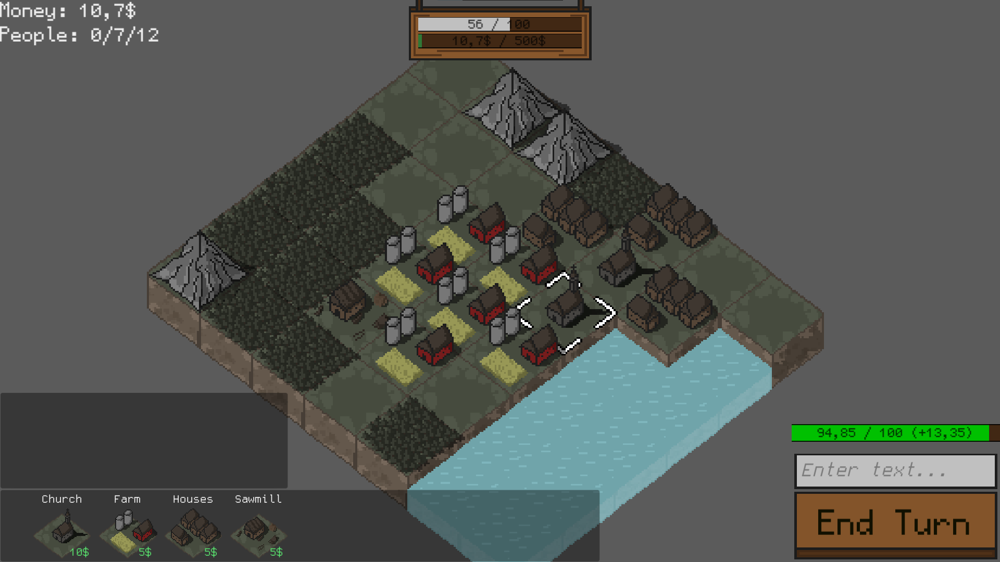

News
Changes in unity which means better performace
As team Unity announced before, the new update is coming. From what we know, it will bring many optimalizations to still fresh new 2d technology. This means, that all my games should work somewhat more smoothly. If you ever had a performance issues, I may be something that you were waiting for.New game in development - Accident Commander
As I announced before, new game is coming. This time you will be a commander of small groups of solders that were sent to the underground facility after some kind of accident. The interesting part is that you will only be able to receive info given you by those under you command, and find way through enemies, race with time and strategic dilemmas. What is event more unique is that you will be able to steer your soldiers with voice commands like true commander sending orders through radio.
Meeting on discord (Q&A)
Another meeting on discord is coming. The date is 27.01.2021, and the server is my main discord server that you all know. You will be able to ask questions about newly coming game, future plans, and other stuff associated with developing games by me.Whole event will start at 18:00 UTC and take about 2 hours.
Update for Buisness!
The awaited update for Business is out, which means more levels with new buildings and mechanics. From now you will be able to gather stone and metals from the ground using mines and boost your building with roads. Those new features will for sure add some playtime to the game, and make sure that end levels pose some bigger challenge for the players.
